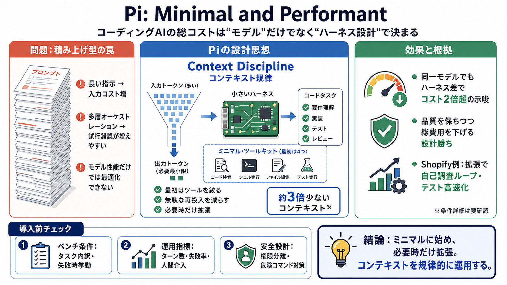

Benchmarking Coding Agents on Databricks’ Multi-Million Line Codebase | Databricks Blog
When we ran the same model with the same thinking effort through two different harnesses (Claude Code/Codex vs Pi), we o…

LLM（モデル性能）だけでなく、実行を制御する“ハーネス”設計が、タスク完了までのターン数と総コストを決める—という主張です。Pi（ハーネス）
AIコーディングでは、より大きいプロンプトや多層の仕組みを足す方向の競争が進みました。しかし本文は、積み上げがそのまま勝ちではないと示します。
本文のPiは“ミニマリズム”で勝つ設計思想です。最初に詰め込まず、必要になった時だけ追加していくことで、コンテキスト浪費を抑えます。
Piの中心概念はcontext discipline（コンテキスト規律）です。無駄なコンテキスト再投入や冗長指示を減らし、作業セットを締めて早く終わらせます（context=文脈）。
Databricksの研究（実運用に近い大規模コードベース）では、同一モデルでもハーネス差でタスクあたりコストが2倍超になる場合があるとされています。品質は同等のまま、ハーネスが支配的に効く—という示唆です。
本文では、Piは拡張前から業界最高水準に近い結果を出し、Opus 4.8と組み合わせたケースで総合パス率が高く、かつ低コストだったと述べられています。
ミニマルは制約ではなく拡張の余地を作る、というのが本文の立て付けです。ユーザーが自分のワークフローに合わせて複雑さを追加できます。
ShopifyではPiの拡張機構を使って“pi-autoresearch”を開発した経緯が説明されています。デモで終わらず、社内の生産性へつながった点が実用性の補強になっています。
LLMの進化でターミナル型環境を理解する能力が上がり、“ネイティブに最適化されたハーネスだけが有利”という構図は弱まりつつある—と本文は論じます。
本文が描く違いは、「指示を増やすほど良い」ではなく「コンテキスト規律と必要時拡張で無駄を削る」です。
ローカルモデルやコンテキスト窓が小さい環境では、prefill（事前投入）が重くなりがちです。Piの最小プロンプトと規律は、再prefillを減らしやすい—という見立てがあります。
本文は外部事例を根拠にしていますが、評価条件の詳細は入力に十分ありません。導入前は“ベンチ条件・失敗条件・拡張構成”を確認する姿勢が重要です。
Piが主張する中心は「モデル性能」ではなく「ハーネス設計」を競争軸に置くことです。
Piの価値は“ミニマルであること自体”よりも、“必要なときだけ拡張し、常にコンテキストを規律的に運用すること”にある—という理解が妥当です。
When we ran the same model with the same thinking effort through two different harnesses (Claude Code/Codex vs Pi), we o…
1) GLM 5.2 using Pi performs identically in terms of pass rate (~87.5%) to Opus 4.8 high using Claude Code, but signific…
The token efficiency is striking: 4.2x fewer tokens than Claude Code per equivalent task. If you’re paying for API acces…
Extensions built in isolation can be shared and distributed. Claude Code uses a plugin marketplace and /plugin commands.…
### Description 22148 views Posted: 24 May 2026 I switched from OpenCode to Pi, a minimal and hackable AI coding agent f…